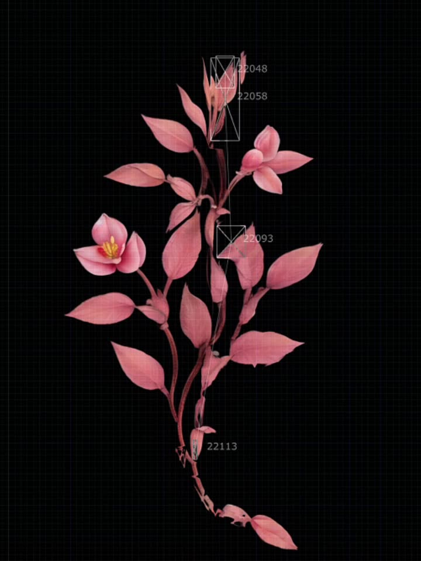
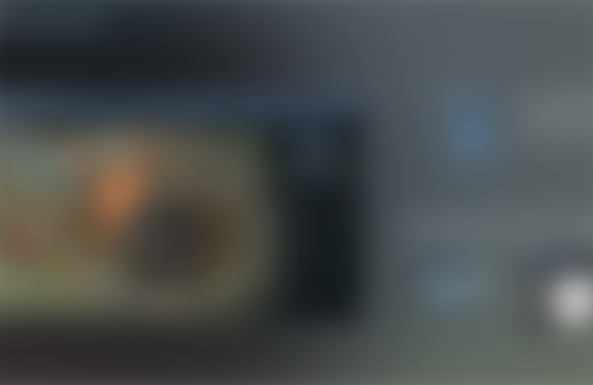

Aa
36–48 · 1.12 · −.055
Design system
39 items
Live pieces from wenjia.space. Open a card for its tokens, code and where it is used.
Aa
36–48 · 1.12 · −.055
Reading window
Heading 32 · Subheading 24
I learn by
trying.
20–24 · 1.6 · −.01
Body · 16px for reading. Supporting copy uses 14px.
One reading measure and consistent spacing across every case.
Navigation · Buttons
Chips, metadata, small actions
EYEBROW / SECTION LABEL
#171717 #555555
#ffffff · #f6f6f6 · #f4f4f3
#777 · #888 · #999 · #a4a4a4
#c9c9c9 · #dedede · #eeeeee
#b87940 · #d48a48
Surface
Glass marks navigation, cells and overlays.
cubic-bezier(.22, 1, .36, 1)
160 · 220 · 350 · 550 · 850
1ms · no animation


Body copy sets the measure at 660px. Images may use the full reading width.
01 Overview
02 Research
03 Design
04 Next
Hi, I'm Wenjia Shi
a designer, curious tinkerer.Information Science @ CornellA spark
is only the beginning.
No components match.